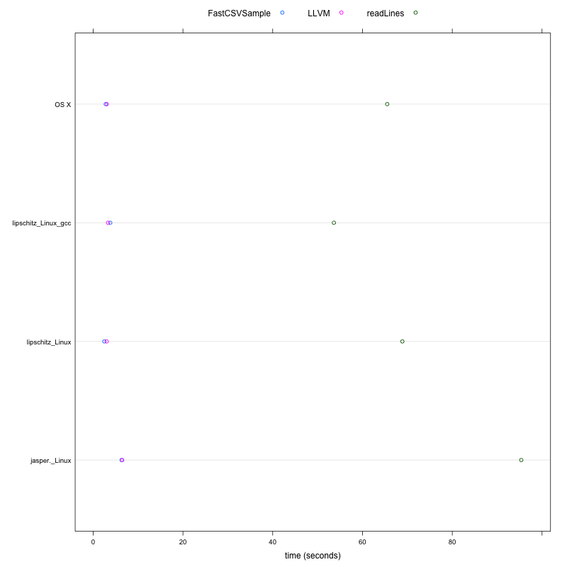

The code for all of these examples is available in the Rllvm package, in the explorations directory or tests directory. The purpose is to evaluate how well we can evaluate non-trivial benchmarks within R or by compiling to native code with Rllvm.
The timings were performed on 3 machines with the following configurations:
| Operating system | CPU | RAM | Compiler for R source |
|---|---|---|---|
| OS X | 2.66 Ghz Intel Core i7 | 8Gb 1067 MHz DDR3 | GCC 4.2.1 |
| Linux | 2.8 Ghz AMD Opteron | 16Gb | GCC 4.3.4 |
| Linux | 3.50Ghz Intel Core i7-2700K | 32Gb | Both GCC 4.8.0 and clang 3.4 (trunk) |
The results are currently displayed as tables. This is because they were originally much simpler, with a single machine. We will figure out a better way to visualize these.
fib =
function(n)
{
if (n < 2L)
n
else
fib(n - 1L) + fib(n - 2L)
}
The timings compare the R function, the byte-compiled version of the function
and the LLVM-compiled function for the equivalent of fib(30).
a = lapply(list.files(pattern = "fib.tm.*.rda"), load, globalenv()) o = lapply(a, get) tm = do.call(cbind, c(lapply(o, function(x) data.frame(time = x[,3], speedup = max(x[,3])/x[,3])), deparse.level = 0))[3:1,] print(tm, digits = 3) sp = data.frame(speedup = unlist(tm[, seq(2, by = 2, length = length(a))]), approach = rep(rownames(tm), ncol(tm)/2)) library(lattice) dotplot(speedup ~ approach, sp)
time speedup time speedup time speedup time speedup
Interpreted R 76.067 1.01 108.335 1.00 57.993 1.06 52.6690 1
Byte-compiled 76.492 1.00 106.780 1.01 61.525 1.00 52.8320 1
LLVM 0.126 605.64 0.206 526.41 0.107 576.62 0.0976 541
This is not necessarily a fair comparison. If we increase the value of the sequence of interest, the
results will be even more exaggerative for the llvm approach. The reason is that there is a lot of
redundant computation in this because of the recursion. However, it does illustrate how a naive
implementation of a function can be made to perform very well without programming in another
language, explicitly.
This example is from Ross Ihaka's example of a 2-dimensional random walk and how to profile code and make it more efficient by vectorization. The timings compare a very naive implementation, a byte compiled version of that naive function, an entirely vectorized version of the function in R, and finally an LLVM-compiled version of the naive function.
a = list.files(pattern = "rw2d.tm.*.rda")
vars = lapply(a, load, globalenv())
vals = lapply(vars, get)
gsub("rw2d.tm.1e7_", "", a)
tm = cbind(`rw2d.tm.1e7_Darwin`, `rw2d.tm.1e7_Linux`, `rw2d.tm.1e7_lipschitz_Linux`, `rw2d.tm.1e7_lipschitz_Linux_gcc`)
print(tm, digits = 3)
Darwin Linux lipschitz_Linux_gcc lipschitz_Linux
Time Speedup Time Speedup Time Speedup Time Speedup
Interpeted 171.083 1.00 196.62 1.00 100.299 1.00 92.389 1.00
Byte Compiled 123.921 1.38 120.83 1.63 60.507 1.66 51.020 1.81
Vectorized 0.969 176.47 1.84 106.83 0.629 159.46 0.655 141.05
Rllvm 0.520 329.32 1.09 180.31 0.401 250.12 0.413 223.97
The results illustrate that the Rllvm drastically outperforms the regular R code or byte-compiled
code. What is somewhat interesting is that the llvm approach outperforms the manually vectorized
approach
sum(log(dnorm(x, mu, sigma))) by transforming the three loops (in the calls to
dnorm, log, sum) into a single loop that computes log(dnorm(x))
for each element and then adds the value to the running total.
This also reduces the number of vector allocations.
a = list.files(pattern = "fuseLoop.tm.1e\\+07.*.rda")
vars = lapply(a, load, globalenv())
cat(m <- gsub(".*\\+07_(.*)\\.rda", "\\1", a), "\n", sep = " ")
o = lapply(vars, get)
tm = lapply(o, function(x) c('llvm time' = median(x$llvm[3,]), 'r time' = median(x$r[3,])))
v = rbind(do.call(cbind, tm),
'LLVM speedup' = sapply(tm, function(x) x[2]/x[1]))
print(v, digits = 3)
tm = data.frame(times = as.numeric(v[1:2,]), approach = rep(rownames(v)[1:2], ncol(v)), machine = rep(m, each = 2))
dotplot( machine ~ times, tm, groups = approach, auto.key = list(columns = 2))
Darwin jasper_Linux lipschitz_Linux_gcc lipschitz_Linux
llvm 0.730 1.69 0.844 0.784
r 0.517 2.28 1.073 1.244
----------------------------------------
LLVM speedup 0.709 1.35 1.271 1.586
On OS X, we don't see a speedup, but an actual slow down! However, the compiled version is competitive
with the built-in vectorized form in R. On the various different Linux configurations, we do see a
performance gain. So our R code outperforms the built-in vectorized form in R.
This example considers how to efficiently sample lines from a text file, specifically a large CSV file. This experiment compares vectorized approaches in R that use more memory than a more direct line-by-line approach that we can implement with an R loop and the compile to native code. This also illustrates how to use C routines - fgets - in R code and have these calls compiled.
a = list.files(pattern = "sampleCSV.tm_1e\\+05.*.rda")
vars = lapply(a, load, globalenv())
cat(m <- gsub(".*\\+05_(.*)\\.rda", "\\1", a), "\n", sep = " ")
o = lapply(vars, get)
tm = do.call(cbind, lapply(o, function(x) { x$result}))
print(tm, digits = 3)
m = gsub("Duncan-Temple-Langs-MacBook-Pro.local_|.ucdavis.edu", "", m)
m = gsub("Darwin", "OS X", m)
times = data.frame(times = as.numeric(tm[, seq(1, by = 2, length = length(a))]), approach = rep(rownames(tm), nrow(tm)/2), machine = rep(m, each = nrow(tm)))
png("sampleCSVTimes.png", 800, 800)
dotplot( machine ~ times, times, groups = approach, auto.key = list(columns = 3), xlab = "time (seconds)")
dev.off()
MacBook-Pro_Darwin jasper_Linux lipschitz_Linux_gcc lipschitz_Linux
elapsed elapsed elapsed elapsed elapsed elapsed elapsed elapsed
readLines 65.50 1.0 95.37 1.0 53.63 1.0 68.88 1.0
LLVM 3.04 21.6 6.46 14.8 3.32 16.2 3.01 22.9
FastCSVSample 2.79 23.5 6.33 15.1 3.81 14.1 2.49 27.7

These results indicate that the llvm-approach can outperform the most obvious R approach to sampling a text file using readLines by a factor of at least 15. So something that takes 2 weeks would take a day, or something that takes 15 minutes would complete in 1 minute. On some platforms and configurations, the performance is increased.
This example considers computing the distance between each pair of observations
between two data sets. This contrasts the approach of using R's dist
function which involves several overheads:
a = list.files(pattern = "distance.tm.8000:1000.*.rda")
cat(gsub(".*40_", "", a), "\n", sep = " ")
vars = lapply(a, load, globalenv())
o = lapply(vars, get)
print(do.call(cbind, lapply(o, function(x) { tm = c(llvm = x[["llvm"]][3], R.dist = x[["r.dist"]][3]) ; data.frame(time = tm, speedup = max(tm)/tm)})), digits = 3)
Darwin Linux lipschitz_Linux_gcc lipschitz_Linux
time speedup time speedup time speedup time speedup
llvm.elapsed 8.98 1.62 11.9 6.67 6.22 4.4 4.64 5.61
R.dist.elapsed 14.55 1.00 79.6 1.00 27.37 1.0 26.01 1.00
The llvm approach improves the performance of this regular R code compared to the internal native
code used by R by a minimum of a factor of 1.6 and up to a factor of 6.